Generated by ChatGPT on 2025-12-16
逐字稿下載：ChatGPT_zh_L04_第_4_講_Density_matrix_Holonomic_Quantum_Computation.txt
完整音檔：
Segment 1:
Segment 2:
Segment 3:
Segment 4:
Segment 5:
Segment 6:
Segment 7:
Segment 8:
Segment 9:
Segment 10:
Segment 11:
Segment 12:
Segment 13:
Segment 14:
Segment 15:
本講延續前面對密度矩陣形式主義（density matrix formalism）、幾何相位（Berry phase）、以及退相干與開放量子系統的討論，將焦點聚焦在：
本講將採用嚴謹的數學推導為主，輔以直覺解釋與具體範例。讀者被假設已熟悉：
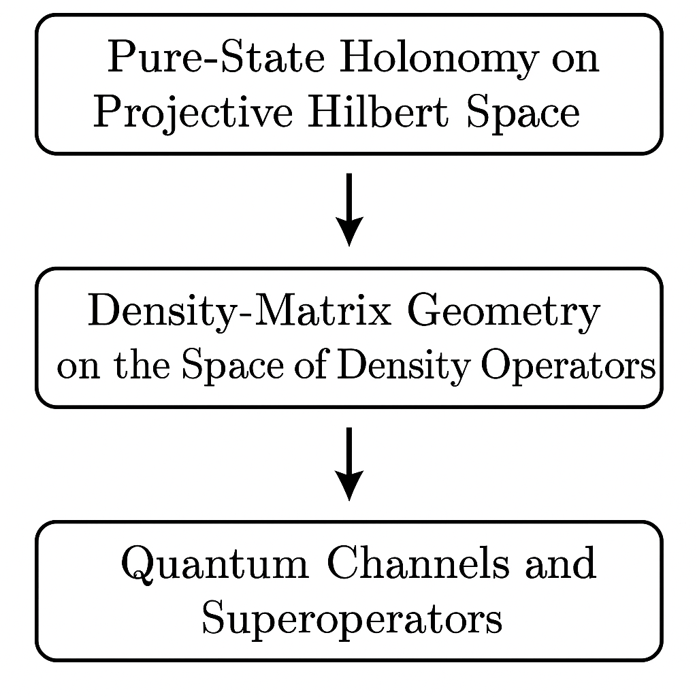
在純態 HQC 中，我們考慮參數空間 \( \mathcal{M} \) 上的 Hamiltonian 家族 \[ H(\lambda) \,,\quad \lambda \in \mathcal{M} \] 其具有某個能譜分解，特別關注一個簡併的本徵子空間 \[ \mathcal{H}_0(\lambda) = \mathrm{span}\{\ket{n_a(\lambda)}\}_{a=1}^k \,, \] 對應本徵值 \( E_0(\lambda) \)。若系統在演化過程中始終停留在此簡併子空間，且我們考慮絕熱且循環（adiabatic & cyclic）演化 \[ \lambda: [0,T] \to \mathcal{M},\quad \lambda(0) = \lambda(T) = \lambda_0 \,, \] 則此簡併空間上的態向量會經歷一個非阿貝爾幾何變換（Wilczek–Zee holonomy） \[ \ket{\psi(0)} \mapsto \ket{\psi(T)} = U_\gamma \ket{\psi(0)} \,, \] 其中 \( U_\gamma \in U(k) \) 僅依賴於參數路徑 \( \gamma: t \mapsto \lambda(t) \) 在 \( \mathcal{M} \) 中的幾何形狀，而與演化細節（如速度）無關（在絕熱與無退相干理想化極限下）。
數學上，取一組局部規定基底（gauge choice） \[ \{\ket{n_a(\lambda)}\}_{a=1}^k \] 則定義非阿貝爾 Berry 連接 \[ \mathcal{A}_\mu(\lambda)_{ab} = i \braket{n_a(\lambda) | \partial_\mu n_b(\lambda)} \,,\quad \partial_\mu \equiv \frac{\partial}{\partial \lambda^\mu} \,, \] 以及沿路徑的 holonomy \(\lambda\) 的值，整個放在指數裡面。-->\[ U_\gamma = \mathcal{P} \exp\left( -\oint_{\gamma} d\lambda^\mu \, \mathcal{A}_\mu(\lambda) \right) \,. \] 這就是純態 HQC 的核心幾何。對應於邏輯 qubit / qudit 的演算，即選擇 \( \mathcal{H}_0(\lambda) \) 作為邏輯子空間，holonomy 作為邏輯閘。
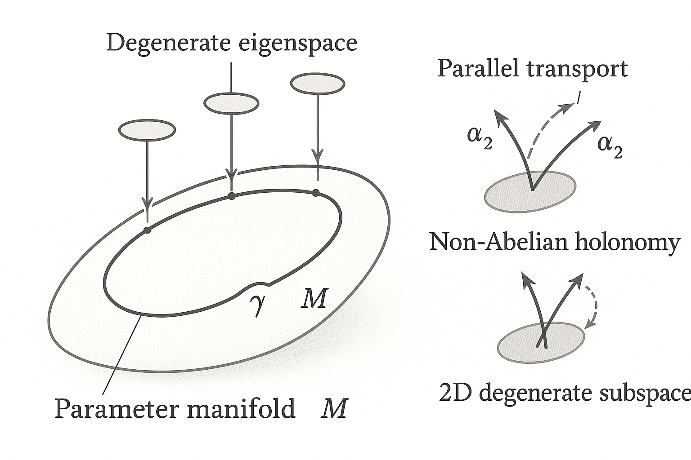
在真實物理系統中：
因此，若要將 HQC 真正推廣到包含開放系統、實用的量子裝置，我們必須回答：
這牽涉到把「向量態 holonomy」推廣到「算符/密度矩陣 holonomy」與「超算符 holonomy」。
考慮有限維希爾伯特空間 \( \mathcal{H} \cong \mathbb{C}^d \)。全部密度矩陣的集合 \[ \mathcal{D}(\mathcal{H}) = \{ \rho \in \mathcal{B}(\mathcal{H}) \mid \rho \ge 0,\ \operatorname{Tr}\rho = 1 \} \] 是一個凸集，但不是線性空間或流形。然而，我們可以考慮固定本徵值集合的等譜子集： \[ \mathcal{D}_\sigma = \{ \rho \in \mathcal{D}(\mathcal{H}) \mid \text{Spec}(\rho) = \sigma = \{\lambda_1,\dots,\lambda_d\}\ \text{(含重數)} \} \] 當 \( \sigma \) 中本徵值不交疊（generic non-degenerate），\( \mathcal{D}_\sigma \) 同胚於旗幟流形（flag manifold）的商： \[ \mathcal{D}_\sigma \cong \frac{U(d)}{U(1)^d} \,, \] 而在有簡併（degeneracy）時，結構更複雜，但仍可被視為某種齊性空間（homogeneous space）。
我們可將 \(\mathcal{D}_\sigma\) 視為一個光滑流形，並在其上定義幾何結構，如聯絡（connection）與曲率（curvature）。這將是定義「混合態幾何相」的天然舞台。
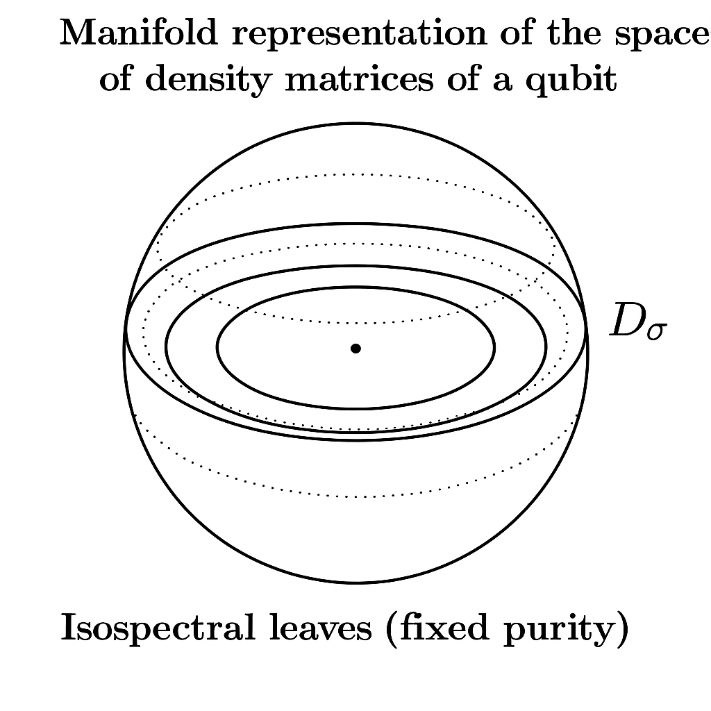
在混合態幾何相的文獻中，一個重要的概念是 Uhlmann phase。其出發點是：對於一個混合態 \( \rho \)，考慮其 purification \[ \rho = \operatorname{Tr}_E \ket{\Psi}\bra{\Psi} \,,\quad \ket{\Psi} \in \mathcal{H} \otimes \mathcal{H}_E \,. \] 不同的 purification 由對環境空間 \( \mathcal{H}_E \) 之上作用的 unitary 所關聯： \[ \ket{\Psi} \sim (I \otimes U_E) \ket{\Psi} \,. \] 透過在這個等價類空間上定義平行移動與聯絡，可得到 Uhlmann phase。
然而，Holonomic Quantum Computation 的邏輯子空間通常被建構在系統自身的希爾伯特空間中，我們更希望從系統密度矩陣本身來描述幾何結構，而不是必須引入額外環境。故本講將以「密度矩陣空間上的纖維束結構」來作為主線，Uhlmann phase 只作為背景概念。
為了構造 HQC，我們需要一個隨參數改變的「邏輯子空間」。在閉合系統中，這是 Hamiltonian 的簡併本徵子空間；在開放系統/密度矩陣框架中，一個自然的類比是 Lindbladian 的零本徵空間（穩態空間）或退相干自由子空間（decoherence-free subspace / subsystem, DFS）。考慮一個 Lindbladian 超算符 \[ \mathcal{L}_\lambda: \mathcal{B}(\mathcal{H}) \to \mathcal{B}(\mathcal{H}) \] 隨參數 \( \lambda \in \mathcal{M} \) 平滑變化，滿足 \[ \dot{\rho}(t) = \mathcal{L}_{\lambda(t)}(\rho(t)) \,. \] 假設存在一族有限維的穩態流形 \[ \mathcal{S}_\lambda = \{ \rho \in \mathcal{D}(\mathcal{H}) \mid \mathcal{L}_\lambda(\rho) = 0 \} \] 且對每個 \( \lambda \)，都有一個維度固定的子空間 \( \mathcal{H}_L(\lambda) \) 嵌入在穩態集合內，扮演邏輯子空間。
更具體的，常見情況是存在某些算符代數 \( \mathcal{A} \) 對 Lindbladian 不變，使得 \[ \rho_L(\lambda) = \sum_{a,b} \rho_{ab} \ket{L_a(\lambda)}\bra{L_b(\lambda)} \] 形成 DFS，其在 Lindbladian 演化中僅受有效 Hamiltonian 貢獻與幾何相影響。這時「邏輯密度矩陣」可被視為嵌入於流形 \(\mathcal{S}_\lambda\) 中的一個子流形。
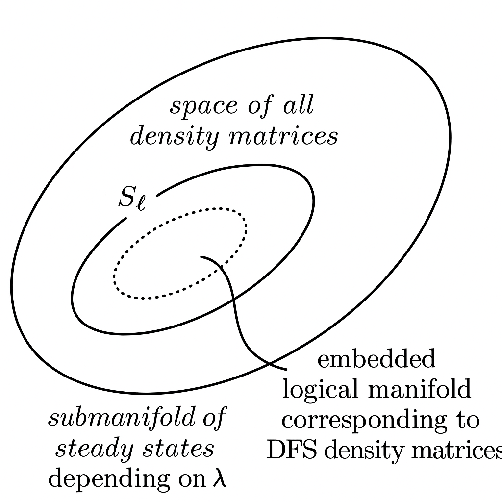
在純態 HQC 中，聯絡是作用在希爾伯特空間向量上的；在密度矩陣版本中，我們需要一個作用於算符／密度矩陣的聯絡。形式上，可考慮以下結構：
我們希冀在此纖維束上引入一個「連接一形式」 \[ \mathbf{A}_\mu(\lambda): \mathcal{F}_\lambda \to \mathcal{F}_\lambda \,, \] 其為一線性超算符，類似於非阿貝爾 Berry 連接，只是作用對象由向量變成算符。若我們考慮邏輯空間 \( \mathcal{H}_L \) 的一組正交基 \( \{\ket{L_a(\lambda)}\} \)，任何邏輯密度矩陣可展成 \[ \rho_L(\lambda) = \sum_{a,b} \rho_{ab}(\lambda) \ket{L_a(\lambda)}\bra{L_b(\lambda)} \,. \] 隨著 \( \lambda \) 改變，基底 \( \ket{L_a(\lambda)} \) 也改變，造成「幾何連接」。
為了將這個結構轉為在密度矩陣空間上的聯絡，我們先定義基底態的非阿貝爾連接 \[ \mathcal{A}_\mu(\lambda)_{ab} = i \braket{L_a(\lambda)| \partial_\mu L_b(\lambda)} \,, \] 接著考慮這個連接在算符空間 \( \mathcal{B}(\mathcal{H}_L) \) 上的自然延伸。對於算符 \( X = \sum_{a,b} X_{ab} \ket{L_a}\bra{L_b} \)，其平行移動方程可寫成 \[ \partial_\mu X + i[\mathcal{A}_\mu, X] = 0 \,, \] 其中括號是矩陣乘法與對易子在 \( \mathcal{H}_L \) 上的自然延伸。於是，在密度矩陣表示下，平行移動條件為 \[ \partial_\mu \rho_L + i [\mathcal{A}_\mu, \rho_L] = 0 \,. \]
若我們沿參數路徑 \( \gamma: t \mapsto \lambda(t) \) 演化，平行移動方程變為 \[ \frac{d}{dt} \rho_L(t) + i \left[ \mathcal{A}_\mu(\lambda(t)) \dot{\lambda}^\mu(t), \rho_L(t) \right] = 0 \,. \] 解為 \[ \rho_L(T) = \mathcal{U}_\gamma \big(\rho_L(0)\big) \equiv U_\gamma \rho_L(0) U_\gamma^\dagger \,, \] 其中 \[ U_\gamma = \mathcal{P}\exp\left( -\int_0^T dt\, \mathcal{A}_\mu(\lambda(t)) \dot{\lambda}^\mu(t) \right) \,. \]
關鍵觀察：即使在密度矩陣框架中，若演化在某個封閉子空間上仍是 unitary（例如 DFS 被保護免於退相干），幾何連接對密度矩陣的作用仍可視為 \[ \rho_L \mapsto U_\gamma \rho_L U_\gamma^\dagger \,. \] 因此，密度矩陣 Holonomy 在此限制下仍由 unitary 共軛給出，但其物理意義與幾何解釋是透過密度矩陣空間上的聯絡來捕捉。
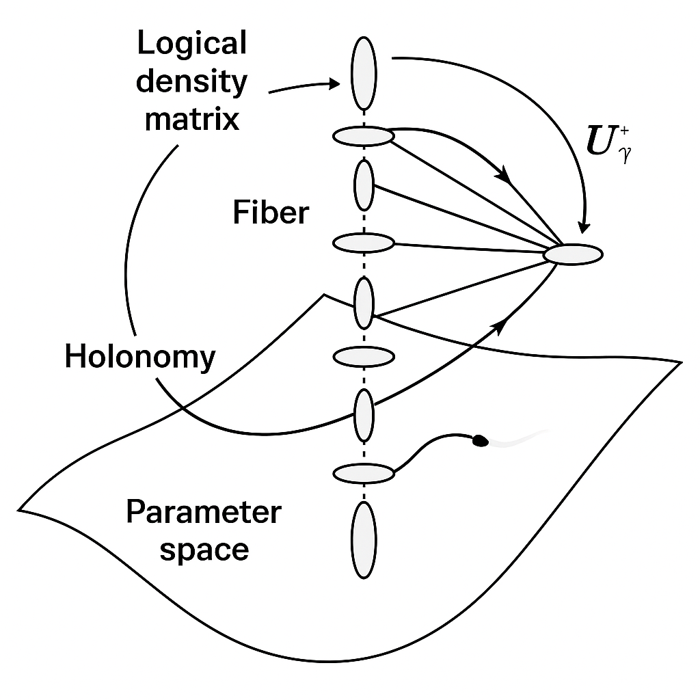
我們可以進一步從超算符角度來看，將 \[ \mathcal{U}_\gamma: \mathcal{B}(\mathcal{H}_L) \to \mathcal{B}(\mathcal{H}_L) \] 定義為 \[ \mathcal{U}_\gamma(\cdot) = U_\gamma (\cdot) U_\gamma^\dagger \,. \] 這是一個 CPTP（完全正且保跡）量子通道。若我們考慮純幾何的極限（忽略動力相位），則 \[ \mathcal{U}_\gamma \] 完全由參數路徑 \( \gamma \) 決定。於是：
定義：
在一個具有參數依賴 DFS 或邏輯穩態流形的開放系統中，若隨著參數沿閉合路徑 \( \gamma \) 絕熱改變時，邏輯密度矩陣的演化可表示為一個只依賴 \( \gamma \) 幾何形狀、而與時間參數化無關的 CPTP 通道 \( \mathcal{U}_\gamma \)，則稱 \( \mathcal{U}_\gamma \) 為一個密度矩陣 Holonomic Quantum Channel。
這使我們可以在完整的量子通道框架中談論 HQC，而不侷限於單純 unitary gate 的描述。
考慮 Lindblad 主方程： \[ \frac{d}{dt} \rho = \mathcal{L}_{\lambda(t)}(\rho) \,, \] 其中 \[ \mathcal{L}_\lambda(\rho) = -i[H(\lambda), \rho] + \sum_\alpha \left( L_\alpha(\lambda) \rho L_\alpha^\dagger(\lambda) - \frac{1}{2}\{L_\alpha^\dagger(\lambda)L_\alpha(\lambda),\rho\} \right). \] 假設對每個 \( \lambda \) 存在一個零本徵值子空間 \[ \mathcal{S}_\lambda = \ker \mathcal{L}_\lambda \,, \] 且此子空間維度為 \( N_L \)，可容納邏輯密度矩陣 \( \rho_L \) 的嵌入。
令 \( \mathcal{P}_\lambda: \mathcal{B}(\mathcal{H}) \to \mathcal{S}_\lambda \) 為對應於穩態子空間的投影超算符（一般是非正交投影，需謹慎對待）。考慮絕熱極限下的開放系統演化：若 Lindbladian 的其他本徵值都具有負實部且有間隙，則系統會被緩慢拖曳（dragged）沿著穩態流形 \( \mathcal{S}_\lambda \)。
形式上，可以作一種投影方法：將密度矩陣分解為 \[ \rho(t) = \rho_S(t) + \rho_\perp(t), \] 其中 \( \rho_S(t) \in \mathcal{S}_{\lambda(t)} \)，而 \( \rho_\perp(t) \) 則為正交（或補空間）部分。絕熱條件意味著 \( \rho_\perp(t) \) 維持在小量，可用類似 adiabatic elimination 的方法得到有效動力學： \[ \frac{d}{dt} \rho_S(t) = \Big( \text{幾何連接貢獻} + \text{可能的有效 Hamiltonian} \Big)(\rho_S(t)). \]
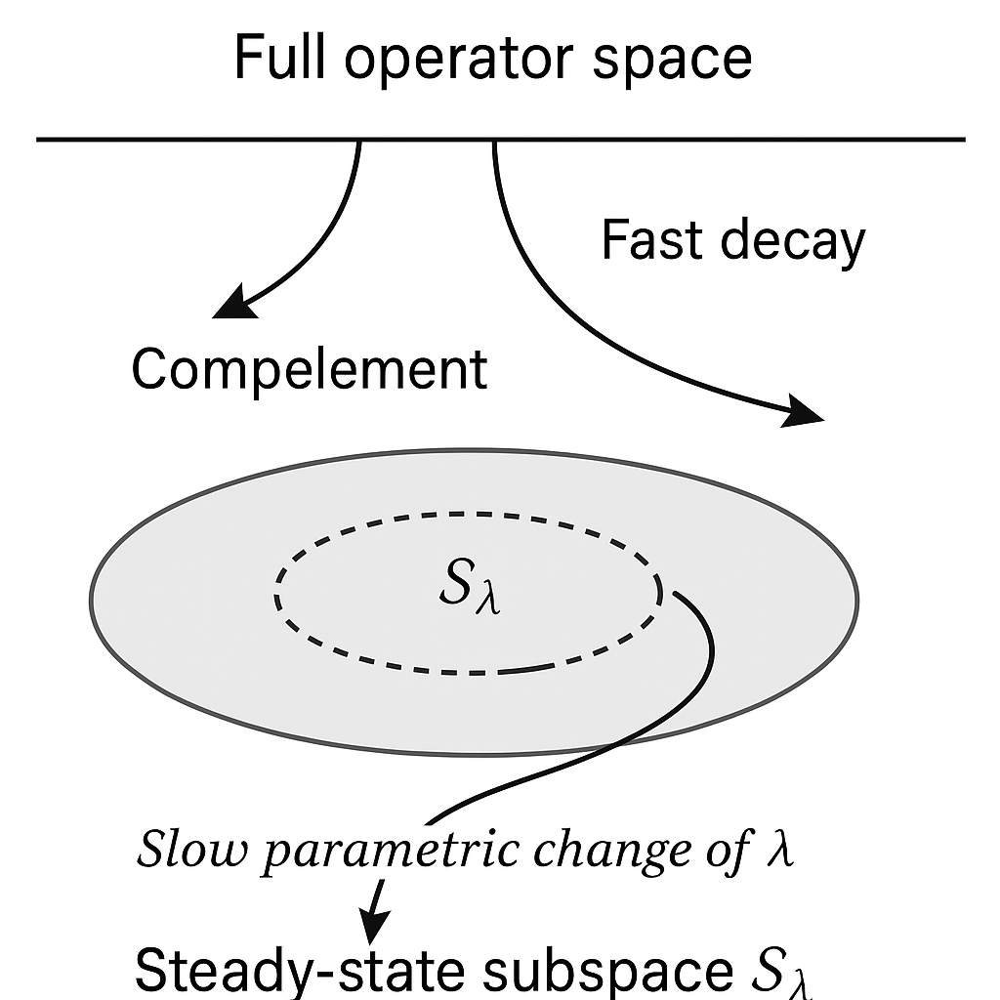
為了捕捉幾何連接，考慮一組依賴 \( \lambda \) 的基底 \[ \{ \rho_i(\lambda) \}_{i=1}^{N_L} \] 張成 \( \mathcal{S}_\lambda \)。任何穩態可以寫成 \[ \rho_S(\lambda) = \sum_{i} c_i(\lambda) \rho_i(\lambda) \,. \] 在絕熱條件下，\(\dot{\rho}_S\) 必須仍屬於 \(\mathcal{S}_\lambda\)。對 \(\dot{\rho}_S\) 展開： \[ \dot{\rho}_S = \sum_i \dot{c}_i \rho_i + \sum_i c_i \partial_\mu \rho_i \dot{\lambda}^\mu \,. \] 但另一方面，\(\dot{\rho}_S\) 也要等於 Lindbladian 的作用 \(\mathcal{L}_\lambda(\rho_S)\)。然而 \(\rho_S\in \ker \mathcal{L}_\lambda\)，在零階絕熱極限中，\(\mathcal{L}_\lambda(\rho_S)=0\)。因此，最主要的變化來自於基底本身隨參數變化所帶來的幾何效應： \[ \dot{\rho}_S \approx 0 \quad \Rightarrow \quad \sum_i \dot{c}_i \rho_i + \sum_i c_i \partial_\mu \rho_i \dot{\lambda}^\mu \approx 0 \,. \]
將此式投影回基底 \(\rho_j\) 上，定義內積（在算符空間中）： \[ \langle A, B \rangle = \operatorname{Tr}(A^\dagger B) \] （對 Hermitian \( \rho_i \) 可略去 dagger）。則有 \[ \sum_i \dot{c}_i \langle \rho_j, \rho_i \rangle + \sum_i c_i \langle \rho_j, \partial_\mu \rho_i \rangle \dot{\lambda}^\mu = 0 \,. \] 若我們在 \(\{\rho_i\}\) 中選取一組「正交規範化」基底，使得 \[ \langle \rho_j, \rho_i \rangle = \delta_{ij} \,, \] 則上式簡化為 \[ \dot{c}_j + \sum_i c_i \, \mathcal{A}_\mu^{(dm)}{}_{ji} \dot{\lambda}^\mu = 0 \,, \] 其中 \[ \mathcal{A}_\mu^{(dm)}{}_{ji} = \langle \rho_j, \partial_\mu \rho_i \rangle = \operatorname{Tr}\left( \rho_j \, \partial_\mu \rho_i \right). \] 這裡 \( \mathcal{A}_\mu^{(dm)} \) 是在密度矩陣基底空間上的「連接矩陣」。形式類似非阿貝爾 Berry 連接，只是基底由態向量換成密度算符。
向量形式寫成 \[ \dot{\mathbf{c}} = - \mathcal{A}_\mu^{(dm)}(\lambda) \dot{\lambda}^\mu \mathbf{c} \,, \] 解為 \[ \mathbf{c}(T) = \mathcal{P} \exp\left( -\int_0^T dt\, \mathcal{A}_\mu^{(dm)}(\lambda(t)) \dot{\lambda}^\mu(t) \right) \mathbf{c}(0) \,. \] 於是 \[ \rho_S(T) = \sum_i c_i(T) \rho_i(\lambda_0) = \sum_{i,j} \left[ \mathcal{U}_\gamma^{(dm)} \right]_{ij} c_j(0)\, \rho_i(\lambda_0) \,, \] \[ \mathcal{U}_\gamma^{(dm)} = \mathcal{P}\exp\left( -\oint_\gamma d\lambda^\mu \, \mathcal{A}_\mu^{(dm)}(\lambda) \right) \,. \]
這裡的 \( \mathcal{U}_\gamma^{(dm)} \) 是在「穩態基底空間」上的非阿貝爾幾何 holonomy，它對邏輯密度矩陣之演化給出一個線性變換。若我們進一步將邏輯空間選擇為僅含純態投影的子集合（例如 DFS 中的純態投影），則此變換可以回到之前的 unitary 共軛形式。
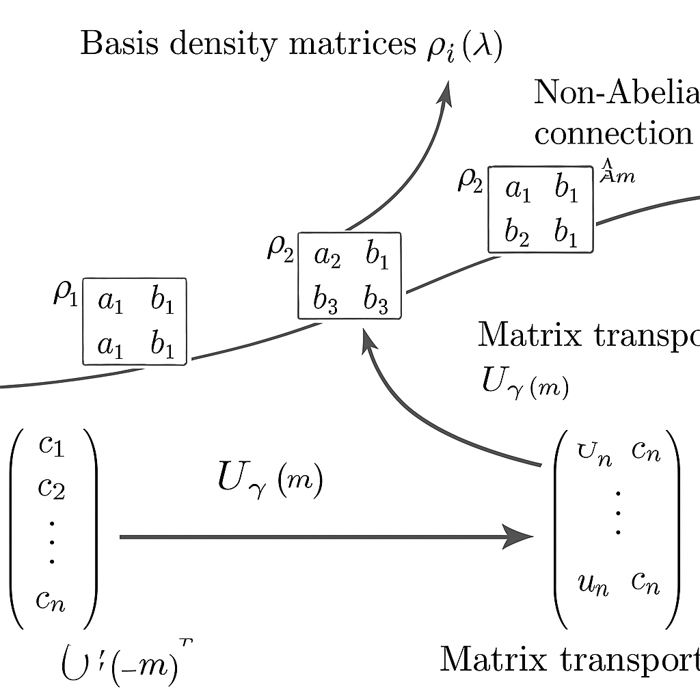
當穩態子空間 \(\mathcal{S}_\lambda\) 中的元素都可以寫成某個 degenerate 子空間內的純態投影時，亦即 \[ \rho_i(\lambda) = \ket{\psi_i(\lambda)}\bra{\psi_i(\lambda)} \,, \] 並且這些 \(\ket{\psi_i(\lambda)}\) 張成一個 \(k\)-維的純態子空間，我們可以檢查 \(\mathcal{A}_\mu^{(dm)}\) 與\( \mathcal{A}_\mu \)（Wilczek–Zee 連接）的關係。對此情況，有 \[ \partial_\mu \rho_i = (\partial_\mu \ket{\psi_i})\bra{\psi_i} + \ket{\psi_i}\partial_\mu \bra{\psi_i} \,. \] 對於基底內積 \[ \mathcal{A}_\mu^{(dm)}{}_{ji} = \operatorname{Tr}(\rho_j \partial_\mu \rho_i) = \braket{\psi_j|\partial_\mu \psi_i} + \braket{\partial_\mu \psi_i|\psi_j} \braket{\psi_j|\psi_i} \,. \] 若選擇 \(\{\ket{\psi_i}\}\) 為正交規範基底（\(\braket{\psi_j|\psi_i} = \delta_{ji}\)），則簡化為 \[ \mathcal{A}_\mu^{(dm)}{}_{ji} = \braket{\psi_j|\partial_\mu \psi_i} + \delta_{ji} \braket{\partial_\mu \psi_i|\psi_i} \,. \] 注意到 \(\braket{\partial_\mu \psi_i|\psi_i} = - \braket{\psi_i|\partial_\mu \psi_i}\)（規範化條件），因此 \[ \mathcal{A}_\mu^{(dm)}{}_{ji} = \braket{\psi_j|\partial_\mu \psi_i} - \delta_{ji} \braket{\psi_i|\partial_\mu \psi_i} \,. \] 若我們以規範條件消除對角元相位（gauge fixing，使 \(\braket{\psi_i|\partial_\mu \psi_i} = 0\)），就得到 \[ \mathcal{A}_\mu^{(dm)}{}_{ji} = \braket{\psi_j|\partial_\mu \psi_i} \,, \] 這正是非阿貝爾 Berry 連接（差一個 \( i \) 因子）。因此，在適當規範與條件之下， \[ \mathcal{A}_\mu^{(dm)} \sim \mathcal{A}_\mu \] 表明密度矩陣幾何連接與純態幾何連接是一致的推廣。
考慮一個 qubit 系統，其密度矩陣可寫成 \[ \rho = \frac{1}{2} (I + \mathbf{r}\cdot\boldsymbol{\sigma}) \,, \] 其中 \( \mathbf{r} \in \mathbb{R}^3 \)，\(|\mathbf{r}|\le 1\)。固定 \(|\mathbf{r}| = r_0\) 對應於等譜流形；其上的點與純態球面 \( S^2 \)（當 \( r_0 = 1\)）類似，只是半徑不同。
為了觀察密度矩陣幾何相，考慮一個有耗散但具有退相干自由子空間的模型。例如，假設 Lindbladian 具有唯一穩態流形 \[ \mathcal{S}_\lambda = \{ \rho(\lambda, \theta) \mid \theta \in [0,2\pi) \} \] 是一個週期性的「環」，可由參數 \(\theta\) 標記，而 \(\lambda\) 控制此環在 Bloch 球中的嵌入位置。
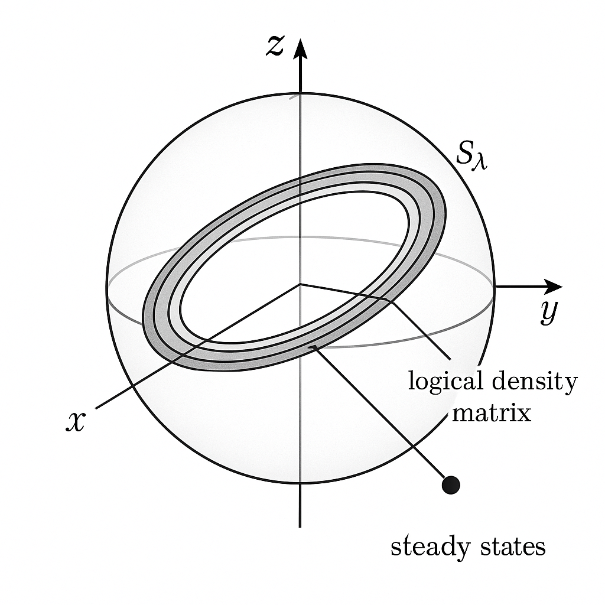
為求具體且簡潔，假設穩態環可被兩個正交純態投影的凸組合表示： \[ \rho(\lambda,\theta) = p(\lambda) \ket{\psi_1(\lambda,\theta)}\bra{\psi_1(\lambda,\theta)} + (1-p(\lambda)) \ket{\psi_2(\lambda,\theta)}\bra{\psi_2(\lambda,\theta)} \,, \] 其中 \(\ket{\psi_1},\ket{\psi_2}\) 是某個退相干自由子空間內的態。令 \[ \rho_1(\lambda) = \ket{\psi_1(\lambda,0)}\bra{\psi_1(\lambda,0)}, \quad \rho_2(\lambda) = \ket{\psi_2(\lambda,0)}\bra{\psi_2(\lambda,0)} \,. \] 任何環上的穩態都可表示為線性組合 \[ \rho_S(\lambda,\theta) = c_1(\theta) \rho_1(\lambda) + c_2(\theta) \rho_2(\lambda) \,, \] 其中 \( c_1(\theta) = p(\lambda)\), \(c_2(\theta) = 1-p(\lambda)\) 或更一般的 \(\theta\)-依賴組合。
若參數 \(\lambda\) 沿閉合路徑 \( \gamma \) 變化，使得基底 \(\{\rho_1(\lambda),\rho_2(\lambda)\}\) 產生幾何連接 \(\mathcal{A}_\mu^{(dm)}\)，我們可按照前述推導計算 \[ \mathcal{A}_\mu^{(dm)}{}_{ij}(\lambda) = \operatorname{Tr}\left( \rho_i(\lambda) \partial_\mu \rho_j(\lambda) \right), \] 進而得到 holonomy \[ \mathcal{U}_\gamma^{(dm)} = \mathcal{P}\exp\left( -\oint_\gamma d\lambda^\mu\, \mathcal{A}_\mu^{(dm)}(\lambda) \right). \]
在簡化情形下，若 \(\rho_1,\rho_2\) 對應於兩條純態軌跡 \(\ket{\psi_1(\lambda)},\ket{\psi_2(\lambda)}\)，且這兩條軌跡各自具有 Berry phase \(\gamma_1, \gamma_2\)，則密度矩陣 holonomy 會將\(\rho_S\) 的「基底成分」混合。特別地，對角元素可能獲得相位無關，但非對角元素則包含 phase difference \[ e^{i(\gamma_1 - \gamma_2)} \,, \] 反映出幾何相在密度矩陣框架下的具體效應。
更詳細的具體計算可選擇：
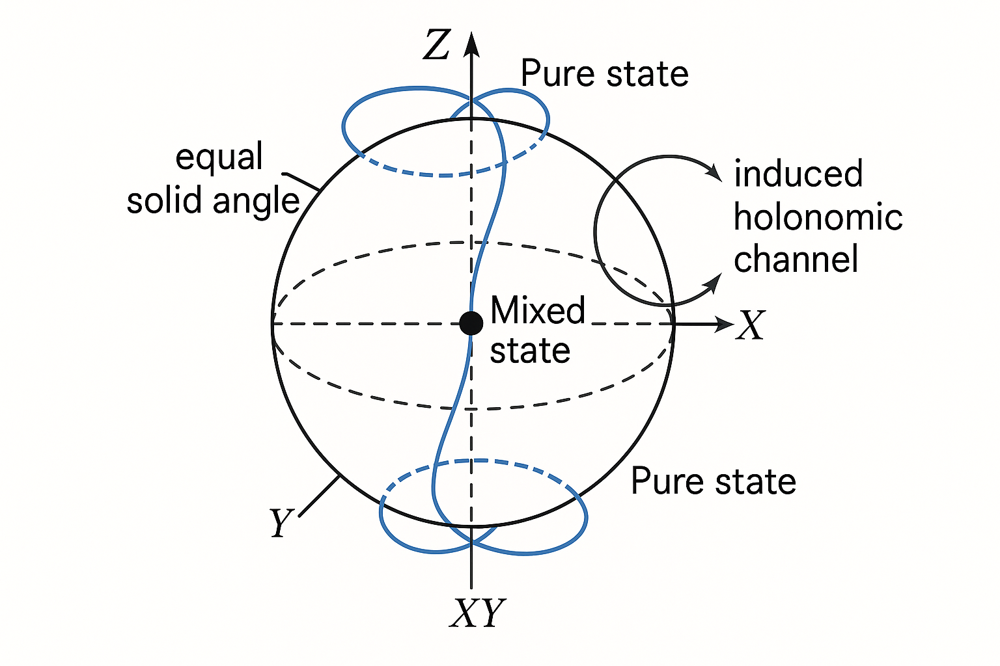
在實際 HQC 設計中，常見策略是在多體系統中構造 DFS 或穩態子空間，例如利用對稱性的 Lindbladian： \[ \mathcal{L}(\rho) = \sum_\alpha \left( L_\alpha \rho L_\alpha^\dagger - \frac{1}{2}\{L_\alpha^\dagger L_\alpha, \rho\} \right), \] 其中 Lindblad 算符 \(L_\alpha\) 對某個代數 \( \mathcal{A} \) 不變： \[ [L_\alpha, A] = 0 \quad \forall A \in \mathcal{A} \,. \] 則 \( \mathcal{A} \) 的某些不可約表現空間（irreducible representation）可能形成 DFS，邏輯 qubit 將被編碼在此。
密度矩陣 HQC 的邏輯閘設計流程可概略如下：
若 DFS 內的演化仍保持unitary，則 \(\mathcal{U}_\gamma^{(dm)}(\rho) = U_\gamma \rho U_\gamma^\dagger\)，可直接視為對應的邏輯閘。這是最常見也最清楚的情況。
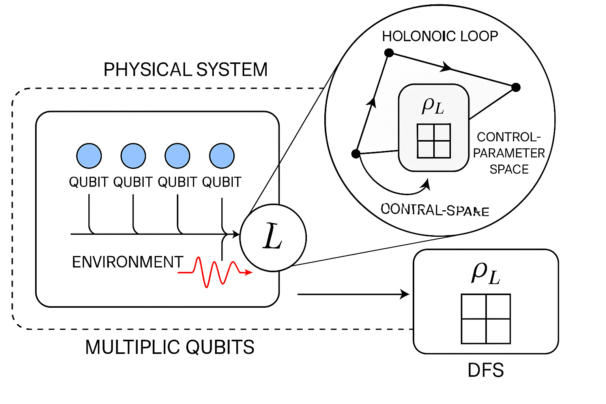
考慮兩個物理 qubit，在集體退相干（collective dephasing）模型下存在 DFS： \[ L = \sigma_z^{(1)} + \sigma_z^{(2)} \,. \] 其共同本徵值為零的子空間由 \[ \ket{01},\ \ket{10} \] 張成。可用此作為邏輯 qubit： \[ \ket{0_L} = \ket{01},\quad \ket{1_L} = \ket{10}. \] 若接著設計一個參數依賴的有效 Hamiltonian \(H_\lambda\) 在 DFS 內產生簡併子空間，並令 Lindblad 結構不破壞此子空間的封閉性，則可將前述純態 HQC 的幾何結構直接嵌入此 DFS。其在密度矩陣語言下，自然地給出 \[ \rho_L \mapsto U_\gamma \rho_L U_\gamma^\dagger \,. \] 由於外層的集體退相干 Lindbladian 保持 DFS 不變，DFS 內態仍呈純樣 unitary 幾何閘，而全系統的態是混合的，但在邏輯子空間中，密度矩陣 holonomy 仍由 \(U_\gamma\) 給出。
這說明密度矩陣 Holonomic Quantum Computation 在很多實作上等價於：在一個嵌於更大開放系統中的封閉子空間上執行純態 HQC，只是數學描述需採用密度矩陣與超算符，以便處理整體演化與量測/誤差。
HQC 的一大動機是其幾何性質預期可對某些誤差具有內在魯棒性。從密度矩陣角度分析，有下列要點：
但與純態情況相比，開放系統下還有額外誤差來源：
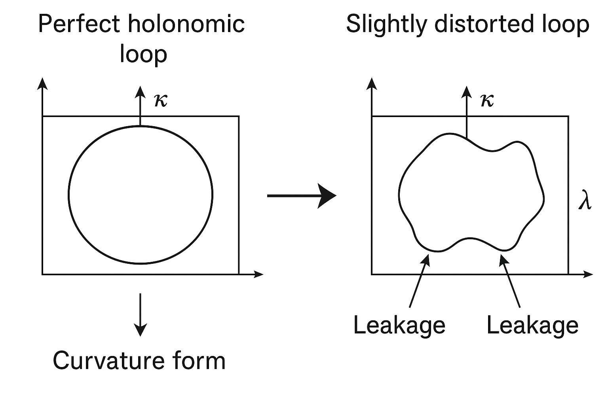
在純態絕熱定理中，我們要求能隙 \( \Delta E \) 大，使得 \[ \left| \frac{\langle m|\dot{H}|n\rangle}{(E_m-E_n)^2} \right| \ll 1 \] 對所有 \( m\neq n \) 成立。開放系統中，Lindbladian \(\mathcal{L}_\lambda\) 的本徵值一般為複數，實部對應衰減率。絕熱條件變為：
數學上，令 \(\mathcal{P}_\lambda\) 為穩態投影，\(\mathcal{Q}_\lambda = I - \mathcal{P}_\lambda\) 為補空間投影，則一個典型的絕熱條件估計為 \[ \left\| \mathcal{Q}_\lambda \frac{d}{dt} \mathcal{P}_\lambda \right\| \ll \min_{z\in \sigma(\mathcal{L}_\lambda) \setminus \{0\}} |z| \] 即「投影變化速度」遠小於 Lindbladian 非零本徵值的最小模長。此條件確保幾何連接 \(\mathcal{A}_\mu^{(dm)}\) 主導有效演化。
在前幾講中，我們已討論：
現從密度矩陣角度統一觀點：
這種整合在密度矩陣框架下非常自然，因為量子退火實際上在實驗上往往是開放系統，如量子退火機器運行時必然與環境耦合；用 Lindblad / 主方程的幾何觀點描述「退火 + 幾何邏輯」是極具潛力的研究方向。
⚠️ 圖片生成失敗
Prompt: unified illustration: left side shows a quantum annealing schedule (changing transverse and problem Hamiltonian); right side shows a parameter manifold with holonomic loops on a steady-state manifold, indicating how geometric control can be combined with annealing dynamics in the density-matrix picture.在密度矩陣 Holonomic Quantum Computation 領域，若干重要與前沿問題包括：
本講內容奠定了從密度矩陣、Lindbladian 與超算符角度來理解 Holonomic Quantum Computation 的幾何骨架。在後續進階課程中，可以更深入探討：